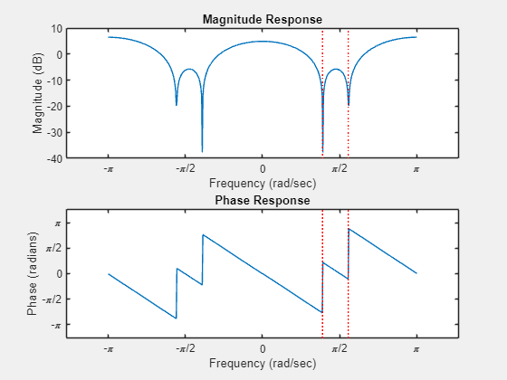
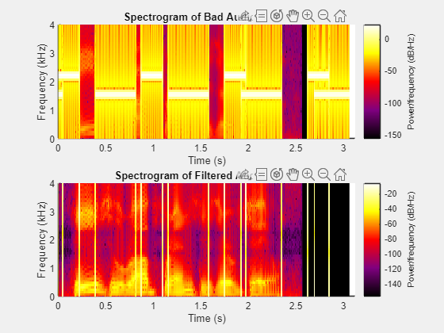
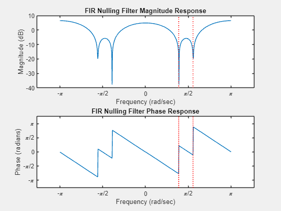
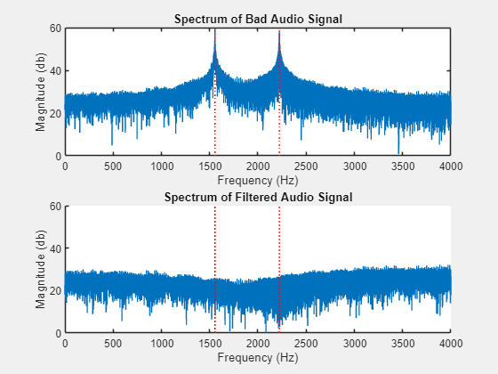
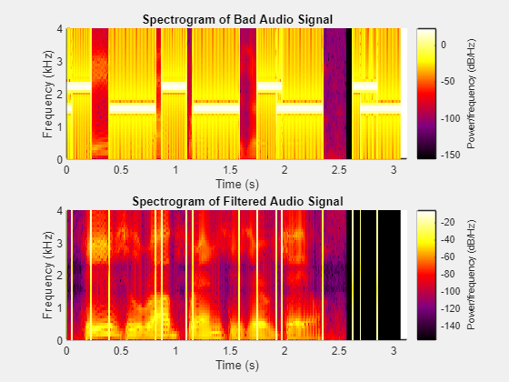

Contents
2.3 Lab-HW: Removing Interference from a Speech Signal
% Quinn Alleman % Project for ECE-6720 clear;clc; playBadAudio = false; playNewAudio = false; saveAudioFiles = false; savePlots = true;
Part A
% Load in the speechbad file % it contains on signal, xxbad, which is the sum of the speech signal and % the very large amplitude sinusiods at 1555 Hz and 2222 Hz. load("speechbad.mat"); % Interference frequencies are in f_interference vector. % Sampling rate is 8000 Hz. This is the fs variable. % The good speech signal is scaled so the max value is one A_speech = 1; % Make a spectrogram (in dB). spectrumData = fft(xxbad); n = length(xxbad); % number of samples f = (0:n-1)*(fs/n); % frequency range signalLength = (length(xxbad)-1)/fs; badSignalSpectrum = db(abs(spectrumData), "power");
Part B
Create a cascaded set of two second-order nulling filters for the two frequencies.
% For filter a, it nulls the 2222 Hz signal a = zeros([1 3]); a(1) = 1; a(2) = -2 * cos((2222/8000)*(2*pi)); a(3) = 1; % For filter a, it nulls the 1555 Hz signal b = zeros([1 3]); b(1) = 1; b(2) = -2 * cos((1555/8000)*(2*pi)); b(3) = 1; % Normalize Filters % a = a/sum(a); % b=b/sum(b); % Convolve the two second-order filters to get a single fourth-order % filter. c = conv(a, b); % Normalize the filter. % c = c/sum(c); responseResolution = 500; frequencyRange = linspace(0, 2*pi, responseResolution); frequencyRangeHz = linspace(0, fs, responseResolution); spectralResponse = zeros(size(frequencyRange)); for k = 1:responseResolution total = 0; for n = 1:length(c) total = total + exp(-1*1i*frequencyRange(k)*(n-1)) * c(n); end spectralResponse(k) = total; end % Get the magnitude and phase response of the spectral response magnitudeResponse = abs(spectralResponse); phaseResponse = angle(spectralResponse); % Convert the values into the ones that need to be plotted. magnitudePlotResponseDB = fftshift(db(magnitudeResponse, "power")); phaseResponsePlot = fftshift(angle(spectralResponse)); frequencyRangePlot = linspace(-pi, pi, responseResolution); % Plot the magnitude response filterSpectralResponseFig = figure(1); hold on; subplot(2,1,1); plot(frequencyRangePlot, magnitudePlotResponseDB); % Magnitude in dB % Plot a vertical line for i = 1:length(f_interference) xline = f_interference(i); xline_radians_s = xline/fs*2*(pi); ymin = min(magnitudePlotResponseDB); line([xline_radians_s xline_radians_s], ylim, 'LineStyle', ':', 'Color', 'r'); % text(xline_radians_s, max(ylim), sprintf('%g Hz', xline), 'HorizontalAlignment', 'right', 'Rotation', 90, 'Color', 'k'); % text(xline_radians_s, ymin, sprintf('%g Hz', xline), 'VerticalAlignment', 'bottom', 'HorizontalAlignment', 'center'); end xlabel('Frequency (rad/sec)'); ylabel('Magnitude (dB)'); title('FIR Nulling Filter Magnitude Response'); set(gca,'XTick',-pi:pi/2:pi) set(gca,'XTickLabel',{'-\pi','-\pi/2','0','\pi/2','\pi'}) % Plot the phase response subplot(2,1,2); plot(frequencyRangePlot, phaseResponsePlot); % Phase in degrees xlabel('Frequency (rad/sec)'); ylabel('Phase (radians)'); title('FIR Nulling Filter Phase Response'); set(gca,'XTick',-pi:pi/2:pi) set(gca,'XTickLabel',{'-\pi','-\pi/2','0','\pi/2','\pi'}) set(gca,'YTick',-pi:pi/2:pi) set(gca,'YTickLabel',{'-\pi','-\pi/2','0','\pi/2','\pi'}) for i = 1:length(f_interference) xline = f_interference(i); xline_radians_s = xline/fs*2*(pi); ymin = min(phaseResponsePlot); line([xline_radians_s xline_radians_s], ylim, 'LineStyle', ':', 'Color', 'r'); % text(xline_radians_s, max(ylim), sprintf('%g Hz', xline), 'HorizontalAlignment', 'right', 'Rotation', 90, 'Color', 'k'); % text(xline_radians_s, ymin, sprintf('%g Hz', xline), 'VerticalAlignment', 'bottom', 'HorizontalAlignment', 'center'); end hold off; % Filter the audio signal. filteredSignal = filter(c, length(xxbad)/fs, xxbad);

Part C
Make a spectrogram (in dB).
spectrumData = fft(filteredSignal); n = length(filteredSignal); % number of samples f = (0:n-1)*(fs/n); % frequency range signalLength = (length(filteredSignal)-1)/fs; goodSignalSpectrum = db(abs(spectrumData), "power"); figure_Spectrum = figure(2); hold on; subplot(2,1,1); plot(f,badSignalSpectrum); xlabel('Frequency (Hz)'); ylabel('Magnitude (db)'); title('Spectrum of Bad Audio Signal'); ylim([0 60]); xlim([0 fs/2]); % Plot up to the nyquist frequency. for i = 1:length(f_interference) xline = f_interference(i); ymin = min(ylim); line([xline xline], ylim, 'LineStyle', ':', 'Color', 'r'); % text(xline_radians_s, max(ylim), sprintf('%g Hz', xline), 'HorizontalAlignment', 'right', 'Rotation', 90, 'Color', 'k'); % text(xline_radians_s, ymin, sprintf('%g Hz', xline), 'VerticalAlignment', 'bottom', 'HorizontalAlignment', 'center'); end hold off; subplot(2,1,2); hold on; plot(f,goodSignalSpectrum); xlabel('Frequency (Hz)'); ylabel('Magnitude (db)'); title('Spectrum of Filtered Audio Signal'); ylim([0 60]); xlim([0 fs/2]); % Plot up to the nyquist frequency. for i = 1:length(f_interference) xline = f_interference(i); ymin = min(ylim); line([xline xline], ylim, 'LineStyle', ':', 'Color', 'r'); % text(xline_radians_s, max(ylim), sprintf('%g Hz', xline), 'HorizontalAlignment', 'right', 'Rotation', 90, 'Color', 'k'); % text(xline_radians_s, ymin, sprintf('%g Hz', xline), 'VerticalAlignment', 'bottom', 'HorizontalAlignment', 'center'); end hold off; % Spectrogram Plots % Create the colormap for the map. % Define the number of points in the colormap n = 256; % Define key colors (black, purple, red, yellow, white) colors = [0 0 0; % Black 0.5 0 0.5; % Purple 1 0 0; % Red 1 1 0; % Yellow 1 1 1]; % White % Initialize the colormap matrix customCMap = zeros(n, 3); % Interpolate the colors for i = 1:3 customCMap(:, i) = interp1(linspace(0, 1, size(colors, 1)), colors(:, i), linspace(0, 1, n)); end figure_Spectrogram = figure(3); subplot(2,1,1); hold on; t = 0:1/fs:2-1/fs; spectrogram(xxbad,100,80,100,fs,'yaxis'); ylim([0 4]); xlim([0 3.125]); title('Spectrogram of Bad Audio Signal'); hold off; subplot(2,1,2); hold on; t = 0:1/fs:2-1/fs; spectrogram(filteredSignal,100,80,100,fs,'yaxis'); ylim([0 4]); xlim([0 3.125]); title('Spectrogram of Filtered Audio Signal'); colormap(figure_Spectrogram, customCMap); hold off; 
Data Output
% Play the Audio Signals in Matlab if (playBadAudio) sound(xxbad, fs); end if (playNewAudio) sound(filteredSignal, fs); end % Save the audio files if (saveAudioFiles) badAudioFilename = 'AudioSignals/BadAudio.flac'; filteredAudioFilename = 'AudioSignals/FilteredAudio.flac'; audiowrite(badAudioFilename, xxbad, fs); audiowrite(filteredAudioFilename, filteredSignal, fs); end % Save the plots if (savePlots) saveas(figure_Spectrum,'MatlabPlots/AudioSignalSpectrum.png'); saveas(filterSpectralResponseFig,'MatlabPlots/FilterSpectralResponse.png'); saveas(figure_Spectrogram,'MatlabPlots/Spectrogram.png'); end  